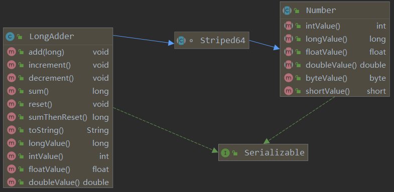

原子（atomic）本意是“不能被进一步分割的最小粒子”，而原子操作（atomic operation）意为“不可被中断的一个或一系列操作”。
Java 在 JDK 1.5 中提供了 java.util.concurrent.atomic 包，这个包中的原子操作类提供了一种用法简单、性能高效、线程安全地更新一个变量的方式。主要提供了四种类型的原子更新方式，分别是原子更新基本类型、原子更新数组、原子更新引用和原子更新属性。
Atomic 类基本都是使用 Unsafe 来保证线程安全。
public final class Unsafe {
...
public final native boolean compareAndSwapObject(Object var1, long var2, Object var4, Object var5);
public final native boolean compareAndSwapInt(Object var1, long var2, int var4, int var5);
public final native boolean compareAndSwapLong(Object var1, long var2, long var4, long var6);
...
}JDK 1.8 中，Doug Lea 又在 atomic 包中新增了 LongAccumulator 等并行累加器，提供了更高效的无锁解决方案。
public class AtomicIntegerTest {
private static CountDownLatch countDownLatch = new CountDownLatch(1);
private static AtomicInteger atomicInteger = new AtomicInteger(1);
public static void main(String[] args) throws InterruptedException {
for (int i = 0; i < 10; i++) {
Thread thread = new Thread(() -> {
try {
countDownLatch.await();
// 以原子方式将当前值加 1，并返回之前的值
System.out.print(atomicInteger.getAndIncrement() + " ");
} catch (InterruptedException e) {
e.printStackTrace();
}
});
thread.start();
}
// 线程同时进行争抢操作
countDownLatch.countDown();
Thread.sleep(2000);
System.out.println();
// 以原子方式将输入的数值与实例中的值相加，并返回结果。
System.out.println(atomicInteger.addAndGet(10));
// CAS 操作
atomicInteger.compareAndSet(21, 30);
System.out.println(atomicInteger.get());
}
}public class AtomicReferenceArrayTest {
// AtomicReferenceArray 会将当前数组（VALUE）复制一份，所以当 AtomicReferenceArray 对内部的数组元素进行修改时，不会影响传入的数组。
private static Stu[] VALUE = new Stu[]{new Stu(System.currentTimeMillis(), "张三"),new Stu(System.currentTimeMillis(), "李四")};
private static AtomicReferenceArray<Stu> REFERENCE_ARRAY = new AtomicReferenceArray<>(VALUE);
public static void main(String[] args) {
// 修改指定位置元素的值
REFERENCE_ARRAY.getAndSet(0, new Stu(System.currentTimeMillis(), "王五"));
System.out.println(REFERENCE_ARRAY.get(0));
System.out.println(VALUE[0]);
}
}public class AtomicStampedReferenceTest {
private static Stu stu = new Stu(System.currentTimeMillis(), "张三");
/**
* 更新对象的时候带一个版本号，可以防止 CAS 中 ABA 问题。原理在于 compare 的时候不仅比较原来的值，还比较版本号。同理更新的时候也需要更新版本号
*/
private static AtomicStampedReference<Stu> stampedReference = new AtomicStampedReference(stu, 1);
public static void main(String[] args) {
System.out.println(stampedReference.getReference());
Stu newStu = new Stu(System.currentTimeMillis(), "李四");
int stamp = stampedReference.getStamp();
stampedReference.compareAndSet(stu, newStu, stamp, stamp++);
System.out.println(stampedReference.getReference());
}
}public class AtomicReferenceFieldUpdaterTest {
// 创建原子更新器，并设置需要更新的对象类和对象的属性
private static AtomicReferenceFieldUpdater<Stu, String> atomicUserFieldRef = AtomicReferenceFieldUpdater.newUpdater(Stu.class, String.class, "name");
public static void main(String[] args) {
Stu stu = new Stu(System.currentTimeMillis(), "张三");
atomicUserFieldRef.set(stu, "李四");
System.out.println(stu.getName());
}
}需要注意的是，更新类的属性必须使用 public volatile 修饰符。以下是 AtomicReferenceFieldUpdater 的源码内容：
if (vclass.isPrimitive())
throw new IllegalArgumentException("Must be reference type");
if (!Modifier.isVolatile(modifiers))
throw new IllegalArgumentException("Must be volatile type");AtomicLong 维护一个变量 value，通过 CAS 提供非阻塞的原子性操作。不足的是，CAS 失败后需要通过无限循环的自旋锁不断尝试，这在高并发N多线程下，将大大浪费 CPU 资源。（这也是其他 Atomic 原子类的通病）
那么如果把一个变量分解为多个变量，让同样多的线程去竞争多个资源那么性能问题不就解决了？是的，JDK8提供的 LongAdder 就是这个思路。

LongAdder 的核心思想是分段，它继承自 Striped64，Striped64 有两个参数 long base 和 Cell[] cells ,接着来看看 LongAddr 的核心代码：
public void add(long x) {
Cell[] as; long b, v; int m; Cell a;
//想要add一个元素的时候，先看一下 cells 数组是否为空，如果是空的就尝试去看能不能直接加到 base上面，如果线程竞争很小就加到 base上面了，函数结束
//如果 cells 是空的，并且竞争很大，cas 失败，就进入if块内，创建 cells
//如果不是空的就进入到 cell 数组中看能加到哪个上面去
if ((as = cells) != null || !casBase(b = base, b + x)) {
boolean uncontended = true;
//如果 cells 是空的，就执行增加操作
if (as == null || (m = as.length - 1) < 0 || (a = as[getProbe() & m]) == null || !(uncontended = a.cas(v = a.value, v + x)))
longAccumulate(x, null, uncontended);
}
}所以想要得到累加的结果，只能调用 LongAdder 的 sum() 方法，即 base + cell[] 数组元素的和。需要注意的是，在计算总和时发生的并发更新可能不会被合并。